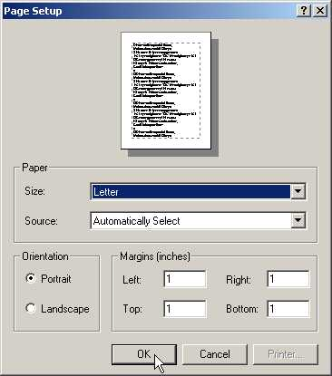

6
Printing
One facility that every
programmer in the world would want to provide through his program is that of
printing. The .NET world has bestowed about ten important printer classes that ease
our job of printing text and graphics to the printer. We shall grapple with
some small programs to grasp the concepts of printing and conclude this chapter
with a small word processor program that is provided along with the .NET
samples. You should create a text file named a.txt in the current subdirectory,
and thereafter, insert the following three lines:
a.txt
hi, how are you
bye, take care
end
a.cs
using System;
using System.Drawing;
using System.Drawing.Printing;
using System.IO;
public class zzz {
Font f;
StreamReader sr;
public void abc()
{
sr = new StreamReader ("a.txt");
f= new Font("Courier New", 14);
PrintDocument pd = new PrintDocument();
pd.PrintPage += new PrintPageEventHandler(pqr);
pd.Print();
}
void pqr(object o, PrintPageEventArgs e)
{
float lpp = e.MarginBounds.Height / f.GetHeight(e.Graphics) ;
int c = 0 ;
String s=null;
while (c < lpp && ((s=sr.ReadLine()) != null))
{
float y = e.MarginBounds.Top + (c * f.GetHeight(e.Graphics));
e.Graphics.DrawString (s, f, Brushes.Black, e.MarginBounds.Left, y);
c++;
}
if (s != null)
e.HasMorePages = true ;
else
e.HasMorePages = false ;
}
public static void Main() {
zzz a = new zzz();
a.abc();
}
}
The above program prints the
contents of the text file a.txt to the default printer. In all our programs in
this chapter, we shall create an object that is an instance of class zzz and
call function abc off it. The code within this function will execute the actual
task of printing.
We first create an object, sr,
which is an instance of the class StreamReader. The constructor of this class
is furnished with the name of the file that we want to print, i.e. a.txt.
The StreamReader class is
derived from the class TextReader, which reads characters from a stream of
bytes that have been encoded in a particular format. The TextReader class
belongs to the System.IO namespace. The Stream class too forms a part of the
same genre. This class is designed for reading byte streams.
The StreamReader class is optimised
for reading lines of data from an ASCII or a text file. By default, the
encoding used is UTF-8, but it can be changed to any other encoding format, if
required. The UTF-8 encoding can comprehend Unicode characters. The
StreamReader class, by default, is not thread safe, and neither does it belong
to the Printing classes in the .NET family.
The class is used in this program to read the file, one line at a time.
We want the printer to print our
text file in a specific font. So, we create a Font object f, whose constructor
is passed the Font Name 'Courier New' along with the size of '14 points'. We
have plenty of choice of fonts from the innumerable fonts available. For the
neophytes of the publishing world, it would be a revelation that 72 points makes
an inch. If we specify a font name such as 'Vijay Mukhi', which does not exist,
the printer uses the default font instead, which in this case, is Microsoft
Sans Serif. Thus, the printer always receives a valid font type to work with.
We create one more object called
pd, in our program, which is an instance of class PrintDocument. This class is
the nucleus of all printing activities in the .NET world. It has an event
called PrintPage, which requires an instance of a delegate PrintPageEventHandler.
The delegate represents a method called pqr, which handles the PrintPage event.
This event is generated by the Print function.
Thus, when we call the Print
function, it in turn, calls the pqr function. This function is passed two
parameters. The second parameter is a PrintPageEventArgs class, which carries
data that is useful for printing. The PrintPageEventArgs class is derived from
class EventArgs. The pqr function is not called explicitly, since this would
entail creation of an object like PrintPageEventArgs.
The Print function is a blocking
function. This implies that not a single line of code will be executed after
the Print function has been called, until the pqr function completes execution.
If the pqr function goes into an indefinite loop, the code succeeding the Print
function will never get executed.
As mentioned earlier, the second
parameter e of data type PrintPageEventArgs contains the data that is to be
printed. The member MarginBounds, which is of data type Rectangle, specifies the
rectangular portion of the page, which falls within the margins. In our case,
the various values of the Rectangle structure are as follows:
Height = 900, Width = 650, Left = 100, Right = 750
Top = 100, Bottom = 1000, X = 100, Y = 100.
Before we initiate printing, we
need to identify the number of lines that can be printed on a single page. To
estimate this, we use the following calculation:
• Height of our page in pixels divided by the height of the font in pixels.
In this example, it works out to
900 / 22.02691 = 40.85. This value is stored in the variable lpp, which signifies 'lines per page'.
We then use another variable c,
which has an initial value of zero. It is incremented in the while loop, once
for every line that is printed. As soon as the value of c exceeds that of lpp,
the program quits out of the 'while' loop.
The ReadLine function of the
StreamReader class fetches a new line from the file a.txt and stores it within
a string variable s. If there are no more lines to be read from the file, this
function returns a null. Thus, the while loop terminates when the number of
lines printed exceed the total number of lines that can fit on a page or when
there are no more lines to be read from the file.
A check must be performed to
verify whether we have printed the maximum possible lines that can fit on a
page, before we read the next line from the file. This is to forestall reading
a line from the file and thereafter, realizing that it cannot be printed on the
page due to lack of space. To perform this check, we determine the y position
of each line on the page. All text is printed below the Top margin. So to
calculate the y position of a line, we use the following calculation:
(Height of the font used
MULTIPLIED BY the number of lines printed so far) PLUS value of the Top margin.
In this case,
The value of the top margin is 100
The height of the font is 22.02691
In the case of the first line to
be printed, the number of lines printed so far is 0.
So, the value of the y
co-ordinate for the first line is
=100+(22.02691 X 0) = 100.
The value of the y co-ordinate
for the second line is
=100+(22.02691 X 1) = 122.0269.
The value of the y co-ordinate
for the third line is
=100+(22.02691 X 2) = 144.0538.
We accessed these values using
the WriteLine function.
The Graphics member in class
PrintPageEventArgs is employed to write to the printer. This member contains
the function DrawString. This function, which we had used earlier to write to
the screen, is now utilized to write to the printer.
The DrawString function accepts
5 parameters:
1) A string, s
2) A font, f
3) A color or brush, Black
4) The left margin for the x coordinate, MarginBounds.Left
5) The y co-ordinate
As you may have noticed, the
same DrawString function is used for printing to the printer and writing to the
screen. Abstraction, therefore, enables us exploit and reuse concepts that we
have learnt earlier.
The while loop ends when any of
the following two conditions is satisfied:
• The number of lines printed exceeds the lines per page i.e. when we need to print on the next page.
• The file has no more lines to print.
To figure out which of the above
conditions has ended the 'while' loop, we verify the value contained in string
s. If the value is null, it signifies that there are no more lines to print.
As soon as we exceed the maximum
number of lines that can be printed on a page, and there are lines remaining to
be printed, there has to be a mechanism to inform the PrintDocument class that
the function pqr needs to be called again, to print the next page. To
accomplish this, the HasMorePages member of the PrintPageEventArgs object e is
either set to true or false. If it is set to true, the function pqr gets called
again.
a.cs
using System;
using System.Drawing;
using System.Drawing.Printing;
using System.IO;
public class zzz
{
Font f;
public void abc()
{
f= new Font("Courier New", 14);
PrintDocument pd = new PrintDocument();
pd.PrintPage += new PrintPageEventHandler(pqr);
pd.PrintPage += new PrintPageEventHandler(xyz);
pd.Print();
}
void pqr(object o, PrintPageEventArgs e)
{
e.Graphics.DrawString ("Vijay Mukhi", f, Brushes.Black, 100, 200);
}
void xyz(object o, PrintPageEventArgs e)
{
e.Graphics.DrawString ("Sonal Mukhi", f, Brushes.Black , 200, 300);
}
public static void Main()
{
zzz a = new zzz();
a.abc();
}
}
Through this example, we once
again demonstrate the power of events and delegates. We attach two methods, pqr
and xyz, with the printing event. The first function pqr prints 'Vijay Mukhi'
at X=100 and Y=200 and then, the method xyz prints 'Sonal Mukhi' at X=200 and
Y=300. The HasMorePages property is initialized to false by the program, even
though it has the value of false by default. Both these lines get printed on
the same page.
Each time we set HasMorePages to
true, the .NET framework sends a 'form feed' signal to the printer that sets up
a new page for printing. The only mechanism of printing text to a printer is by
means of the Graphics object.
If the 'font' and the 'Brushes'
parameters are set to null, a run-time exception is generated. Hence, they must
be explicitly specified. Unlike a dot matrix printer that prints one line at a
time, a laser printer first creates an entire page in memory and then sends it
for printing. Thus, in the function pqr, if we change the Y coordinate from 200
to 400, both lines get printed on the same page, since the page first gets
created in the memory, and then it is sent to the printer.
The PrintDocument class creates
the PrintPageEventArgs object, since that is the sole mechanism of activating
the printer. Then, it calls all the methods registered through the delegate.
a.cs
using System;
using System.Drawing;
using System.Drawing.Printing;
using System.IO;
public class zzz
{
public void abc()
{
yyy y = new yyy();
y.PrintPage += new PrintPageEventHandler(pqr);
y.Print();
}
void pqr(object o, PrintPageEventArgs e)
{
System.Console.WriteLine("pqr");
e.Graphics.DrawString ("Sonal Mukhi", new Font("Courier New",10), Brushes.Black, 100, 200);
}
public static void Main()
{
zzz a = new zzz();
a.abc();
}
}
public class yyy : PrintDocument
{
Font f;
protected override void OnQueryPageSettings(QueryPageSettingsEventArgs e)
{
base.OnQueryPageSettings(e) ;
System.Console.WriteLine("OnQueryPageSettings");
}
protected override void OnBeginPrint(PrintEventArgs e)
{
base.OnBeginPrint(e) ;
System.Console.WriteLine("OnBeginPrint");
f = new Font("Courier New",14);
}
protected override void OnEndPrint(PrintEventArgs e)
{
base.OnEndPrint(e) ;
System.Console.WriteLine("OnEndPrint");
}
protected override void OnPrintPage(PrintPageEventArgs e)
{
base.OnPrintPage(e) ;
System.Console.WriteLine("OnPrintPage");
e.Graphics.DrawString ("Vijay Mukhi", f, Brushes.Black, 100, 400);
}
}
Output
OnBeginPrint
OnQueryPageSettings
pqr
OnPrintPage
OnEndPrint
In the above example, class yyy
is derived from PrintDocument. Thus, all code embodied in the PrintDocument class
is available to yyy. This also implies that any code in the class can be
overridden. The Print method of the PrintDocument class had earlier called the
methods registered with the delegate, whereas now, it calls a series of methods
from the PrintDocument class. In the situation where we want to call our
methods with the same name as in class yyy, the keyword 'override' has to be
used.
The output confirms that the
first function to be called is OnBeginPrint. This function is akin to an
initialization function. All code that is to be executed only once must be
placed in this function. It is a sage programming practice to always call the
original function from the base class. Thus, we use the keyword base to call
the original OnBeginPrint from the class PrintDocument.
Superior programming style
decrees that, initially, the base functions should be called. It is not
mandatory to do so, since even if this is not done, the class still behaves in
a similar manner. The documentation too is silent on this issue, but we
consider it prudent to do so and advise you also to call the original function
first.
The parameter PrintEventArgs
passed to the function has no significant role to play in this release. The
documentation clearly states that this PrintEventArgs has been designed for use
in a future release. Thus, it cannot be put to any consequential use at
present. We create a Font object in this function, since it is a one-time
activity.
The second function that gets
called is OnQueryPageSettings, which will be elucidated in the next example.
Following it, function pqr gets called, which facilitates printing. Then, function OnPrintPage gets called with
the same parameters as that of the function pqr. If we so desire, we can print
in the delegate method. Other than the delegate method being called first,
there is no apparent difference.
Finally, the function OnEndPrint
is called, in which, we are presented with the opportunity to clean up any
resources created in the method OnBeginPrint.
a.cs
using System;
using System.Drawing;
using System.Drawing.Printing;
using System.IO;
public class zzz
{
public void abc()
{
yyy y = new yyy();
y.PrintPage += new PrintPageEventHandler(pqr);
y.Print();
}
void pqr(object o, PrintPageEventArgs e)
{
e.Graphics.DrawString ("Sonal Mukhi", new Font("Courier New",10), Brushes.Black, 100, 200);
}
public static void Main()
{
zzz a = new zzz();
a.abc();
}
}
public class yyy : PrintDocument
{
Font f;
protected override void OnQueryPageSettings (QueryPageSettingsEventArgs e)
{
base.OnQueryPageSettings(e) ;
e.PageSettings.Landscape = true;
}
protected override void OnBeginPrint(PrintEventArgs e)
{
base.OnBeginPrint(e) ;
f = new Font("Courier New",14);
}
protected override void OnPrintPage(PrintPageEventArgs e)
{
base.OnPrintPage(e) ;
e.Graphics.DrawString ("Vijay Mukhi", f, Brushes.Black, 100, 400);
}
}
Each time we use the printer, we
may be desirous of customizing the print settings for each page. To enable this,
the framework calls the function OnQueryPageSettings before printing any page.
In this function, we can change the page settings using the parameter e, which
is of type QueryPageSettingsEventArgs. This class is derived from
PrintEventArgs class.
One of the members in
QueryPageSettingEventArgs is PageSettings, which contains a large number of
properties that control the printer settings. Here, we have only used the
Landscape property and assigned it a boolean value of true. Had we assigned it
a value of false, the property would have been set to Portrait mode, which is
usually the default mode.
Other properties that can be
modified are: the paper tray i.e. the source from where the paper is fed to the
printer, the printer resolution, the page margins, the color etc. Any property
of a printer that can be set manually can now be done using this function.
a.cs
using System;
using System.Drawing;
using System.Drawing.Printing;
using System.IO;
public class zzz
{
public void abc()
{
yyy y = new yyy();
y.PrintPage += new PrintPageEventHandler(pqr);
y.Print();
}
void pqr(object o, PrintPageEventArgs e)
{
e.Graphics.DrawString ("Sonal Mukhi", new Font("Courier New",10), Brushes.Black, 100, 200);
}
public static void Main()
{
zzz a = new zzz();
a.abc();
}
}
public class yyy : PrintDocument
{
Font f;
protected override void OnPrintPage(PrintPageEventArgs e)
{
base.OnPrintPage(e) ;
e.Cancel = true;
f = new Font("Arial",13);
e.Graphics.DrawString ("Vijay Mukhi", f, Brushes.Black, 100, 400);
}
}
In this program, the Cancel
property of PrintPageEventArgs is set to true, resulting in cancellation of the
print job. The printing that was to be carried out by the delegate function
also gets cancelled. All print jobs are aborted. The PageSettings object used
in the earlier program is also a property of the PrintPageEventArgs class, and
thus, can be used in this function too.
a.cs
using System;
using System.Windows.Forms;
using System.Drawing;
using System.Drawing.Printing;
using System.IO;
public class zzz
{
public void abc()
{
PrintDocument y = new PrintDocument ();
y.PrintPage += new PrintPageEventHandler(pqr);
PrintDialog d = new PrintDialog() ;
d.Document = y;
DialogResult r = d.ShowDialog();
if (r == DialogResult.OK)
y.Print();
}
void pqr(object o, PrintPageEventArgs e)
{
e.Graphics.DrawString ("Sonal Mukhi", new Font("Courier New",10), Brushes.Black, 100, 200);
}
public static void Main()
{
zzz a = new zzz();
a.abc();
}
}
In this example, we would like
to display a dialog box to the user where he can change the printing options.
Therefore, firstly we create an object d as an instance of class PrintDialog.
Creating a PrintDialog object assigns default values to the following eight
properties:
• AllowSomePages is set to False, disabling the Pages option button.
• AllowSelection is set to False, disabling the Selection option button.
• AllowPrintToFile is set to True,
enabling Print to File check box.
• Document, which is a reference to the PrintDocument object, is set to null.
• PrinterSettings is assigned the value of False, disabling the dialog box.
• PrintToFile decides whether the printer would print to disk or to the printer. If the value is null, it prints to the printer.
• ShowHelp is set to False, thus disabling the help button.
• ShowNetwork is set to True, thus enabling the network button.
We can modify any of these
values to befit our requirements. We can also select specific parts of the
document to print.
|
|
|
Screen 6.1 |

When we run the program, the
normal Windows Printer Dialog box is displayed, allowing us to modify any of
the properties. The ShowDialog function facilitates the display of the dialog
box. This function waits until one of two the buttons, OK or Cancel, is
clicked.The value returned on clicking one of these two buttons is stored in
the DialogResult object r.
If the OK button is selected, it
will start the printing, whereas if the Cancel button is selected, it will
cancel or abort the printing. When the
OK button is selected, the function ShowDialog returns an enum DialogResult,
with a value OK. The above enum can have as many as 8 different values,
depending upon the type of buttons available in the Dialog Box. Thereafter, the
Print function of the PrintDialog class is called.
One of the final actions of the
function ShowDialog is to initialize the Document property supplied by
PrintDocument object, i.e. y, to the printer settings chosen in the Dialog box.
a.cs
using System;
using System.Windows.Forms;
using System.Drawing;
using System.Drawing.Printing;
using System.IO;
public class zzz
{
public void abc()
{
PrintDocument y = new PrintDocument ();
y.PrintPage += new PrintPageEventHandler(pqr);
PageSetupDialog p = new PageSetupDialog () ;
PageSettings s = new PageSettings();
p.PageSettings = s ;
p.ShowDialog ();
y.DefaultPageSettings = s;
y.Print();
}
void pqr(object o, PrintPageEventArgs e)
{
e.Graphics.DrawString ("Sonal Mukhi", new Font("Courier New",10), Brushes.Black, 100, 200);
}
public static void Main()
{
zzz a = new zzz();
a.abc();
}
}
In the above example we usher in
a new class, PageSetupDialog, which allows the user to change page settings
such as the margins and the paper orientation. When we create a PageSetupDialog
object, properties in the object get initialized to their default values.
Some of the properties are :
• AllowMargins: set to true, enables us to change the margins settings.
• AllowOrentation: set to true, enables the Portrait/Landscape radio buttons.
• AllowPaper: set to true, so that we can choose the paper size and source.
• AllowPrinter: set to true, enables the printer button.
• MinMargins: set to null, so that the default margins of 1 inch are displayed.
• PageSettings: set to null.
• PrinterSettings: set to null.
It is mandatory to initialise
the PageSettings property to an actual object containing the settings selected
by the user. Finally the function ShowDialog initializes the object s.
|
 |
|
Screen 6.2 |
Then, the property
DefaultPageSettings of the PrintDocument class is initialised to the
PageSettings object s, so that the printing framework uses the settings stored
in this property. Thus, the two dialog boxes have their own unique purposes,
and each of them fills up an object that is used by the PrintDocument class. In
the Windows world, Dialog boxes are used to fill up properties/variables in an
object.
In the above two programs, the
function pqr does not receive any values from the dialog boxes.
a.cs
using System;
using System.Windows.Forms;
using System.Drawing;
using System.Drawing.Printing;
using System.IO;
public class zzz {
public void abc()
{
PrintDocument pd = new PrintDocument();
pd.PrintPage += new PrintPageEventHandler(pqr);
PrintPreviewDialog dlg = new PrintPreviewDialog() ;
dlg.Document = pd;
dlg.ShowDialog();
pd.Print();
}
void pqr(object o, PrintPageEventArgs e)
{
e.Graphics.DrawString ("Sonal Mukhi", new Font("Courier New",10), Brushes.Black, 100, 200);
}
public static void Main() {
zzz a = new zzz();
a.abc();
}
}
|
Screen 6.3 |
Before we buy goods, we often like
to preview them. The same analogy is true when we want to print a document. The
class PrintPreviewDialog enables us to preview a document before printing it.
The only property that is to be initialized here is Document property. This is
mandatory since there is no other mechanism by which the Dialog box can receive
the contents of the page.
We can safely assume that the
ShowDialog function calls Print, which figures out the text to be printed on a
page. It also has the ability to display the content in different magnification
percentages and in multiple pages at a time. The Dialog contains a
PrintPreviewControl, which has several members that can be toyed around with,
in order to transform the appearance.
a.cs
using System;
using System.Windows.Forms;
using System.Drawing;
using System.Drawing.Printing;
using System.IO;
public class zzz
{
public void abc()
{
PrintDocument pd = new PrintDocument();
pd.PrintPage += new PrintPageEventHandler(pqr);
pd.Print();
}
void pqr(object o, PrintPageEventArgs e)
{
Image i = Image.FromFile("Sample.jpg");
Point p = new Point(100, 100);
e.Graphics.DrawImage(i, p);
e.Graphics.DrawString ("Sonal Mukhi", new Font("Courier New",10), Brushes.Black, 100, 600);
}
public static void Main()
{
zzz a = new zzz();
a.abc();
}
}
A printer has the capability of
not only printing text, but also lines, ellipses, curves and images. This
program prints an image. Before you proceed, ensure that file sample.jpg
resides in the current directory.
The Image class constructor is supplied with a jpg file, which we have picked up from the .NET samples. The Point object p represents the X, Y coordinates where the image is to be drawn. Then, using the DrawImage function from the Graphics class, the image is printed at the position specified. Using this procedure, all images displayed on the screen in the previous chapters can be sent to the printer for printing.